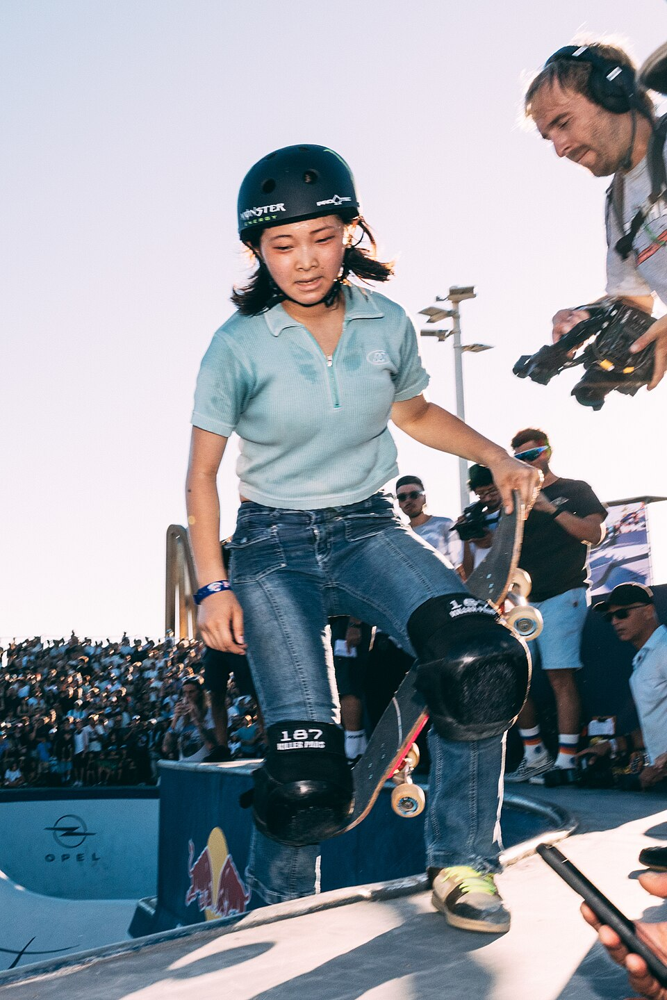

O Campeonato Mundial de Skate Park de 2026 terminou com duas grandes atuações internacionais e mais uma medalha para o skate brasileiro. Neste sábado, 10 de outubro, na pista do Comitê Olímpico Paraguaio, em Luque, na região metropolitana de Assunção, Mizuho Hasegawa e Egoitz Bijueska conquistaram os títulos mundiais feminino e masculino dos World Skate Games.
A competição reuniu alguns dos principais nomes do skate mundial e teve um alto nível técnico nas duas decisões. Entre as mulheres, Hasegawa superou a britânica Sky Brown e a compatriota Cocona Hiraki. No masculino, Bijueska terminou à frente do norte-americano Tom Schaar e de Gui Khury, que garantiu o bronze para o Brasil.
O país contou com quatro representantes nas finais: Raicca Ventura no feminino, além de Augusto Akio, Kalani Konig e Gui Khury no masculino. O resultado reforçou a presença brasileira entre os principais competidores internacionais da modalidade, em um campeonato que também teve importância para o ranking olímpico rumo aos Jogos de Los Angeles 2028.
Final feminina
A decisão colocou frente a frente atletas que já vinham protagonizando grandes disputas internacionais. A japonesa Mizuho Hasegawa, de 15 anos, confirmou sua condição de destaque do skate park ao conquistar o título mundial com 91,00 pontos.
A britânica Sky Brown ficou com a medalha de prata ao alcançar 89,50 pontos. O bronze também foi para o Japão, com Cocona Hiraki, que registrou 88,50 pontos.
O resultado demonstrou o equilíbrio entre as principais competidoras. A diferença entre a campeã e a vice foi de apenas 1,50 ponto, enquanto Hiraki terminou um ponto atrás de Brown.
Classificação da final:
- Mizuho Hasegawa (Japão) — 91,00 pontos — ouro
- Sky Brown (Grã-Bretanha) — 89,50 pontos — prata
- Cocona Hiraki (Japão) — 88,50 pontos — bronze
- Hikari Satake (Japão) — 80,30 pontos
- Naia Laso (Espanha) — 78,83 pontos
- Minna Stess (Estados Unidos) — 77,62 pontos
- Raicca Ventura (Brasil) — 77,33 pontos
- Yi Fan Lin (Taipé Chinês) — 54,66 pontos
Para Hasegawa, a conquista teve um significado especial. A japonesa já havia vencido a competição de skate vertical nos World Skate Games de Assunção, ampliando seu protagonismo no evento com o título no Park.
Raicca Ventura representou o Brasil na decisão
Campeã mundial em 2024, Raicca foi a única brasileira a disputar a final feminina em Assunção. A skatista de 19 anos chegou à decisão depois de uma campanha marcada pela evolução das notas nas fases eliminatórias.
Nas quartas de final, Raicca conseguiu 81,50 pontos e avançou com a terceira melhor marca da fase. Na semifinal, realizada em 9 de outubro, voltou a mostrar capacidade de recuperação e encerrou sua participação com 80,16 pontos.
A brasileira começou a semifinal com 68,55 pontos, melhorou para 76,80 na segunda volta e alcançou sua melhor nota na terceira tentativa. O desempenho garantiu a quarta colocação e a classificação entre as oito finalistas.
Na decisão, Raicca terminou na sétima colocação, com 77,33 pontos, encerrando sua participação entre as oito melhores skatistas do Mundial de Park 2026.
Fernanda Tonissi também esteve na semifinal, mas terminou em 15º lugar, com 70,86 pontos, ficando fora da decisão.
A presença de Raicca na final teve peso importante para a delegação brasileira. Depois de conquistar o Mundial de 2024, a atleta voltou a competir diretamente contra nomes como Hasegawa, Brown e Hiraki, mantendo-se entre as finalistas da principal competição internacional da modalidade.
Final masculina
No masculino, o grande vencedor foi o espanhol Egoitz Bijueska. Aos 15 anos, o skatista de Bilbao conquistou o título mundial com uma nota de 94,50 pontos, superando uma final extremamente competitiva.
O norte-americano Tom Schaar garantiu a prata com 93,07 pontos, enquanto Gui Khury completou o pódio com 92,15 pontos.
Classificação da final:
- Egoitz Bijueska (Espanha) — 94,50 pontos — ouro
- Tom Schaar (Estados Unidos) — 93,07 pontos — prata
- Gui Khury (Brasil) — 92,15 pontos — bronze
- Augusto Akio (Brasil) — 91,35 pontos
- Tate Carew (Estados Unidos) — 85,37 pontos
- Issei Sakurai (Japão) — 78,28 pontos
- Tom Martin (França) — 72,32 pontos
- Kalani Konig (Brasil) — 66,00 pontos
A conquista consolidou um período de resultados expressivos para Bijueska. Em março de 2026, o espanhol já havia vencido, em São Paulo, o Campeonato Mundial correspondente à temporada de 2025, realizado com atraso no calendário.
Com o ouro no Paraguai, alcançou seu segundo título mundial consecutivo no Park.
O desempenho em Assunção também mostrou sua regularidade ao longo da competição. Bijueska marcou 94,33 pontos nas quartas de final, elevou a nota para 94,60 na semifinal e conquistou o título com 94,50 na decisão.
A sequência colocou o espanhol entre os principais protagonistas do ciclo olímpico que levará aos Jogos de Los Angeles 2028.
Gui Khury conquista bronze e amplia coleção de medalhas
O bronze de Gui Khury foi o principal resultado brasileiro nas finais do Park. O skatista alcançou 92,15 pontos e terminou entre os três melhores de uma disputa que reuniu alguns dos principais atletas do circuito internacional.
A medalha teve um significado especial porque Gui já havia subido ao pódio durante os mesmos World Skate Games.
No dia 3 de outubro, o brasileiro conquistou a prata no Mundial de Skate Vertical, ficando atrás do norte-americano JD Sanchez. Uma semana depois, voltou a conquistar medalha, desta vez em uma das modalidades olímpicas do skateboarding.
A combinação dos resultados mostrou sua versatilidade competitiva, conseguindo transformar sua participação em Assunção em duas medalhas mundiais, consolidando o torneio como mais um capítulo importante de sua trajetória internacional
.
Augusto Akio e Kalani Konig também disputaram a final
O caminho até a decisão foi marcado pelas dificuldades provocadas pela chuva. A semifinal masculina começou em 9 de outubro, mas precisou ser interrompida antes que todos os participantes completassem suas apresentações.
A competição foi retomada no dia seguinte, quando a classificação dos oito finalistas acabou definida.
Augusto Akio chegou à decisão depois de uma semifinal expressiva. O medalhista olímpico marcou 94,01 pontos e terminou na terceira colocação da fase.
Na final, Akio alcançou 91,35 pontos e encerrou sua participação na quarta colocação, imediatamente atrás de Gui Khury na classificação.
Kalani Konig também conseguiu uma classificação importante. Depois de notas de 59,66 e 28,66 nas duas primeiras tentativas, o brasileiro elevou seu desempenho para 92,75 pontos na terceira volta, assegurando a quinta posição na semifinal.
Na decisão, Kalani terminou em oitavo lugar, com 66,00 pontos.
Abaixo as decisões feminina e masculina na íntegra:
Resultados dos brasileiros no Mundial de Skate Park 2026
O Brasil contou com 16 representantes nas disputas masculina e feminina do Mundial no Paraguai. Ao todo, foram sete mulheres e nove homens, com quatro atletas chegando às decisões por medalhas.
Park feminino:
- Raicca Ventura — 7ª colocada
- Fernanda Tonissi — 15ª colocada
- Dora Varella — 18ª colocada
- Fernanda Galdino — 20ª colocada
- Yndiara Asp — 21ª colocada
- Helena Laurino — 22ª colocada
- Sofia Godoy — 28ª colocada
Park masculino:
- Gui Khury — 3º colocado
- Augusto Akio — 4º colocado
- Kalani Konig — 8º colocado
- Pedro Quintas — 15º colocado
- Luigi Cini — 24º colocado
- Luiz Francisco — 30º colocado
- Dan Sabino — 36º colocado
- Pedro Carvalho — 34º colocado
- Pedro Barros — 40º colocado
.
O Mundial de Skate Park no ciclo de Los Angeles 2028
A competição integrou o calendário internacional da World Skate e distribuiu pontos para o ranking utilizado no processo de classificação olímpica para LA28.
Esse contexto aumenta a importância das participações brasileiras. A presença de quatro finalistas representa oportunidades de pontuação e mantém o país em contato direto com os principais concorrentes internacionais.
A etapa paraguaia também deu continuidade a uma temporada de alto nível técnico. Em junho, a Copa do Mundo de Skate Park em Roma já havia reunido competidores importantes na disputa por pontos do ranking olímpico.
Park feminino e masculino mostram uma geração de alto nível
As finais de Assunção deixaram um retrato interessante do momento vivido pelo skate park internacional.
No feminino, a vitória de Mizuho Hasegawa reforçou o protagonismo japonês. A presença de duas atletas do Japão no pódio demonstrou a força do país na formação e no desenvolvimento de competidoras capazes de disputar grandes títulos.
No masculino, o segundo título mundial consecutivo de Egoitz Bijueska colocou a Espanha em destaque, enquanto Tom Schaar manteve os Estados Unidos entre os medalhistas e Gui Khury assegurou a presença brasileira no pódio.
Outro aspecto marcante foi a juventude dos campeões. Tanto Hasegawa quanto Bijueska conquistaram o ouro aos 15 anos, mostrando a velocidade com que novos talentos conseguem atingir o mais alto nível competitivo.
Para o Brasil, o Mundial de Skate Park 2026 terminou com uma medalha e quatro finalistas. A campanha reuniu a experiência de Augusto Akio, a competitividade de Kalani Konig, a presença de Raicca Ventura entre as melhores do mundo e o bronze de Gui Khury.
Mais do que um resultado isolado, o torneio de Assunção evidenciou a intensidade da disputa internacional em um momento importante do ciclo olímpico. Com campeões jovens, notas próximas e diferentes países no pódio, o Mundial do Paraguai se tornou uma referência do nível técnico que o skate park alcançou antes dos Jogos de Los Angeles 2028.